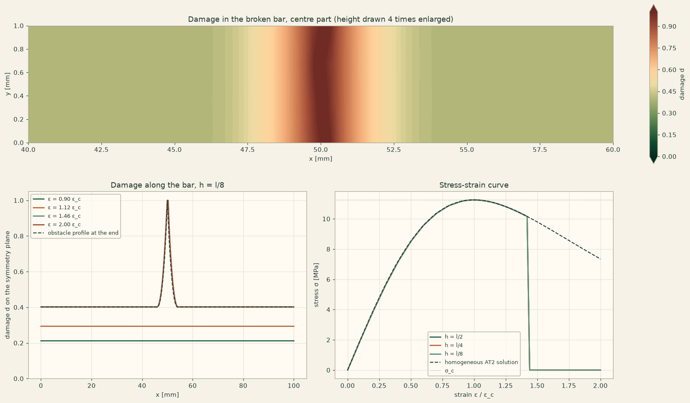
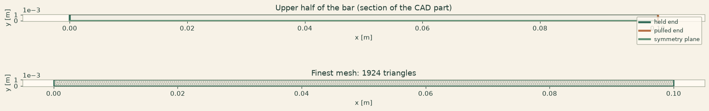

Docs › Examples › Brittle damage of a bar in tension
Fracture mechanics · 2D
Brittle damage of a bar in tension
A concrete bar is stretched until it breaks, with the AT2 phase-field damage model in plane stress.

What it computes
OneSimulation reads the upper half of the bar from a STEP file, cuts it to its plane and solves the coupled displacement and damage equations of the AT2 model in plane stress with alternating minimisation and irreversible damage; a small imperfection at the centre makes the uniform damage localise into a crack across the bar after the peak. Three uniform meshes from h = l/2 to h = l/8 are compared. The script that builds the STEP file comes with the notebook.
What it checks
The peak stress 11.2500 MPa at ε_c equals the closed-form homogeneous AT2 solution, the uniform branch matches it to 1e-6 of the peak stress, and the dissipated energy approaches the analytical localised (obstacle) solution with a deviation falling from 8.9 % (h = l/2) to 1.6 % (h = l/8).
Geometry
The notebook starts at the import of the CAD file brittle_bar_phase_field.step: STEP (AP242), readable by any CAD program, with the names of the faces that the boundary conditions use. Put it next to the notebook.

The geometry script
The script brittle_bar_phase_field_geometry.py builds the geometry with the CAD objects of OneSimulation and writes the file. Change a dimension there, run it, and run the notebook again.
"""Geometry of the OneSimulation example "Brittle damage of a bar in uniaxial tension".
Builds the upper half of the bar with the CAD objects of OneSimulation: 100 mm long, 1 mm high
(half of the 2 mm bar height) and 1 mm thick. The part is written to brittle_bar_phase_field.step;
the faces keep the names x_min (held end), x_max (pulled end), y_min (symmetry plane) and y_max
(free surface).
"""
from onesim.cad.d3 import Box
Box(length=0.1, width=0.001, height=0.001).save("brittle_bar_phase_field.step")The notebook
The complete notebook, cell by cell. Run it to produce the figures and the comparison printout.
Phase-field models describe a crack by a damage field \(d\in[0,1]\) smeared over a width set by the regularisation length \(\ell\). The AT2 model of Bourdin, Francfort and Marigo minimises
The homogeneous solution. As long as the bar stays uniform, the damage and the stress at the strain \(\varepsilon\) are
with the peak \(\sigma_c=\frac{9}{16}\sqrt{EG_c/3\ell}\) at \(\varepsilon_c=\sqrt{G_c/3E\ell}\) (K. Pham, J.-J. Marigo, C. Maurini, J. Mech. Phys. Solids 59, 2011, 1163-1190). Unlike a real brittle material, AT2 has no elastic range: damage grows from the first load step.
Localisation. Past the peak the uniform state becomes unstable; at a small imperfection the damage concentrates into a crack across the bar. When the bar is broken (\(\sigma=0\)) the damage away from the crack stays frozen at the value \(d_h\) it had reached, and the crack profile along the bar is the solution of the obstacle problem \(d\ge d_h\): \(d=d_h\cosh\big((x^*-|x-x_0|)/\ell\big)\) for \(|x-x_0|<x^*\), \(\cosh(x^*/\ell)=1/d_h\). Its energy plus the frozen uniform damage gives the dissipated energy, with \(A\) the cross-section,
Setup. A concrete bar 100 mm long and 2 mm high, \(E=30\) GPa, \(\nu=0.2\), \(G_c=100\) N/m, \(\ell=2.5\) mm, in plane stress. The upper half comes from the CAD file brittle_bar_phase_field.step, written by brittle_bar_phase_field_geometry.py with the CAD objects of OneSimulation (1 mm thick). The damage at the centre starts at 0.1 (a Gaussian of width \(\ell\)) as the imperfection.
| side | displacement | damage | |---|---|---| | x_min (held end) | \(u_x=0\) | zero flux | | x_max (pulled end) | \(u_x=\bar u(t)\), increasing | zero flux | | y_min (symmetry plane) | \(u_y=0\) | zero flux | | y_max | traction free | zero flux |
import numpy as np
from onesim.cad.exchange import load
from onesim.meshing import TriangularMesher
from onesim.physics.solid_mechanics import PhaseFieldFracture
from onesim.visualization import plots, theme
theme.set()Geometry and mesh
load returns the half bar, section its plane at half thickness with the names of the cut faces on its sides. Three uniform triangle meshes with the element size \(\ell/2\), \(\ell/4\) and \(\ell/8\); a uniform mesh leaves the place of the crack to the imperfection.
bar = load("brittle_bar_phase_field.step")
length, half_height, thickness = bar.size
plane = bar.section((0, 0, 1), origin=(0, 0, thickness / 2))
faces = plane.boundaries
ell = 2.5e-3
fractions = [2, 4, 8]
meshes = {n: TriangularMesher(target_size=ell / n).generate(plane) for n in fractions}
fig = plots.figure(2, 1, size=(15, 2.8))
plots.geometry(
plane,
selection={
"held end": faces.x_min,
"pulled end": faces.x_max,
"symmetry plane": faces.y_min,
},
labels=False,
title="Upper half of the bar (section of the CAD part)",
ax=fig[0],
)
plots.mesh(
meshes[8],
groups=("all",),
legend=False,
title=f"Finest mesh: {meshes[8].cell_count} triangles",
ax=fig[1],
)
plots.show()Model
The pulled end moves in 65 steps to twice the peak strain, finely after the peak. In each step the solver alternates between equilibrium and damage until the damage changes by less than \(10^{-6}\).
youngs_modulus, toughness, area = 30e9, 100.0, half_height * thickness
peak_strain = np.sqrt(toughness / (3 * youngs_modulus * ell))
peak_stress = 9 / 16 * np.sqrt(youngs_modulus * toughness / (3 * ell))
strain = np.r_[np.linspace(0, 0.9, 10), np.linspace(0.92, 2.0, 55)] * peak_strain
model = PhaseFieldFracture(
youngs_modulus=youngs_modulus,
poisson_ratio=0.2,
fracture_energy=toughness,
length_scale=ell,
thickness=thickness,
plane_stress=True,
)
results = {
n: model.solve(
mesh=mesh,
times=strain * length,
tolerance=1e-6,
max_iterations=5000,
displacements=(
(faces.x_min, "x", 0.0),
(faces.x_max, "x", lambda t: t),
(faces.y_min, "y", 0.0),
),
initial_damage=lambda x, y: 0.1 * np.exp(-(((x - length / 2) / ell) ** 2)),
)
for n, mesh in meshes.items()
}
stress = {
n: result.reactions[:, np.isclose(result.coordinates[:, 0], length), 0].sum(axis=1)
/ area
for n, result in results.items()
}Comparison with the reference
The peak stress and the homogeneous branch up to localisation, and for each mesh the frozen damage \(d_h\), the dissipated energy against the analytical localised solution and the largest deviation of the damage along the symmetry plane from the obstacle profile.
homogeneous = (
lambda e: youngs_modulus * e**2 / (toughness / ell + youngs_modulus * e**2)
)
fine = results[8]
uniform = np.ptp(fine.damage, axis=1) < 0.01
print(
f"peak stress: simulation {stress[8].max() / 1e6:.4f} MPa at ε = {strain[stress[8].argmax()] / peak_strain:.3f} ε_c, "
f"homogeneous AT2 solution {peak_stress / 1e6:.4f} MPa at ε = ε_c, deviation {100 * (stress[8].max() / peak_stress - 1):+.3f} %"
)
print(
f"homogeneous branch up to ε = {strain[uniform].max() / peak_strain:.2f} ε_c: largest stress deviation "
f"{np.abs(stress[8][uniform] - (1 - homogeneous(strain[uniform])) ** 2 * youngs_modulus * strain[uniform]).max() / peak_stress:.1e} σ_c"
)
print(
f"{'mesh':>6s} {'triangles':>9s} {'d_h':>7s} {'dissipated / G_c A':>19s} {'1D obstacle solution':>21s} {'deviation':>10s} {'profile deviation':>18s}"
)
profiles, deviations = {}, []
for n, result in results.items():
x, y = result.coordinates.T
frozen = result.damage[-1, np.argmin(x)]
reach = ell * np.arccosh(1 / frozen)
profiles[n] = np.where(
np.abs(x - length / 2) < reach,
frozen * np.cosh((reach - np.abs(x - length / 2)) / ell),
frozen,
)
exact = (
np.sqrt(1 - frozen**2)
- frozen**2 * np.arccosh(1 / frozen)
+ length * frozen**2 / (2 * ell)
)
deviations.append(result.fracture_energy[-1] / (toughness * area) / exact - 1)
print(
f"{'l/' + str(n):>6s} {meshes[n].cell_count:9d} {frozen:7.4f} {result.fracture_energy[-1] / (toughness * area):19.4f} {exact:21.4f}"
f" {100 * deviations[-1]:+9.2f} % {np.abs(result.damage[-1] - profiles[n])[np.isclose(y, 0.0)].max():18.4f}"
)Figure
The damage in the bar at the end, the damage along the symmetry plane at four strains, the stress-strain curves of the three meshes with the homogeneous solution, and the final crack against the obstacle profile.
x, y = fine.coordinates.T
axis = np.isclose(y, 0.0)
order = np.argsort(x[axis])
shown = {
f"ε = {strain[k] / peak_strain:.2f} ε_c": k
for k in (9, 20, int(np.flatnonzero(uniform).max()) + 2, len(strain) - 1)
}
line = np.linspace(0, 2.0, 400) * peak_strain
fig = plots.figure(layout=[["field", "field"], ["profiles", "curve"]], size=(15, 9))
plots.heatmap(
1e3 * x,
1e3 * y,
fine.damage[-1],
triangles=np.asarray(meshes[8].cells),
limits=(0, 1),
label="damage d",
aspect=4.0,
xlabel="x [mm]",
ylabel="y [mm]",
xlimits=(40, 60),
title="Damage in the broken bar, centre part (height drawn 4 times enlarged)",
ax=fig["field"],
)
plots.line(
y={
label: (1e3 * x[axis][order], fine.damage[k, axis][order])
for label, k in shown.items()
},
reference={
"obstacle profile at the end": (1e3 * x[axis][order], profiles[8][axis][order])
},
ylimits=(0, 1.05),
xlabel="x [mm]",
ylabel="damage d on the symmetry plane",
title="Damage along the bar, h = l/8",
legend="upper left",
ax=fig["profiles"],
)
plots.line(
y={
f"h = l/{n}": (strain / peak_strain, values / 1e6)
for n, values in stress.items()
},
reference={
"homogeneous AT2 solution": (
line / peak_strain,
(1 - homogeneous(line)) ** 2 * youngs_modulus * line / 1e6,
)
},
hlines={"σ_c": peak_stress / 1e6},
xlabel="strain ε / ε_c",
ylabel="stress σ [MPa]",
title="Stress-strain curve",
legend="lower center",
ax=fig["curve"],
)
plots.show()Going further
Raise the imperfection to make the bar break earlier, with less frozen damage; shorten the bar to a few \(\ell\) and the uniform state stays stable past the peak. Compare a smaller \(\ell\): the peak stress grows like \(1/\sqrt\ell\), which is why \(\ell\) is often chosen from the tensile strength of the material.